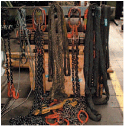
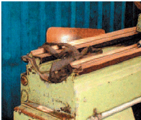

Anschlagmittel aus Chemiefasern müssen trocken und luftig sowie gegen Einwirkung von Witterungseinflüssen und aggressiven Stoffen geschützt gelagert werden (Bilder 5-1 und 5-2).
Anschlagmittel aus Chemiefasern dürfen nicht in der Nähe von Feuer und anderen heißen Stellen getrocknet werden. Temperaturen von 100 °C dürfen nicht überschritten werden.
Heiße Stellen sind z. B. Heißdampfrohre, Heizstrahler.

Bild 5-1: Ungünstige Lagerung von Anschlagmitteln, Beispiel 1

Bild 5-2: Ungünstige Lagerung von Anschlagmitteln, Beispiel 2